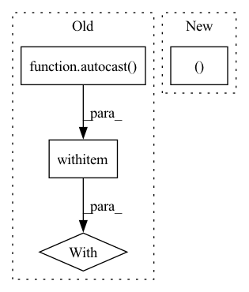

Pattern ID :27050
Before Change
inputs, labels = data
inputs, labels = inputs.to(device), labels.to(device)
with autocast ():
if Ncrop:
// fuse crops and batchsize
bs, ncrops, c, h, w = inputs.shape
inputs = inputs.view(-1, c, h, w)After Change
bs, ncrops, c, h, w = inputs.shape
inputs = inputs.view(-1, c, h, w)
else:
bs, c, h, w = inputs.shape
inputs = inputs.view(-1, c, h, w)
ncrops = 1
// repeat labels ncrops timesIn pattern: SUPERPATTERN
Frequency: 3
Non-data size: 4
Instances Fragment ID: 80497848
Project Name: pooya-mohammadi/fer
Commit Name: fa762c0b00c6941c7e81d26aebdd39773300cceb
Time: 2021-08-01
Author: dor2ns@gmail.com
File Name: utils/loops.py
M Class Name: AnonimousClass
N Class Name: AnonimousClass
M Method Name: train(8)
N Method Name: train(8)
M Parent Class:
N Parent Class:
M File Name: utils/loops.py
N File Name: utils/loops.py
M Start Line: 38
M End Line: 83
N Start Line: 39
N End Line: 84
Before Change
targets["target_seg"] = seg_mask.squeeze().to(device=self._device)
// Make prediction
with autocast ():
losses, predictions = self._model.train_step(data, targets, evaluation=True)
loss_abs = sum(losses.values())
loss_agg += loss_abs.item()After Change
loss_abs += loss_val * self._config["loss_coefs"][loss_key.split("_")[0]]
// Evaluate validation predictions based on metric
pred_boxes, pred_classes, pred_scores = inference(out)
self._evaluator.add(
pred_boxes=pred_boxes,
pred_classes=pred_classes, Fragment ID: 80497849
Project Name: bwittmann/transoar
Commit Name: d1d610ce7014a86c72c7d5625dbe82be40b2c340
Time: 2022-06-24
Author: bastian.wittmann@tum.de
File Name: transoar/trainer.py
M Class Name: Trainer
N Class Name: Trainer
M Method Name: _validate(2)
N Method Name: _validate(2)
M Parent Class:
N Parent Class:
M File Name: transoar/trainer.py
N File Name: transoar/trainer.py
M Start Line: 105
M End Line: 146
N Start Line: 100
N End Line: 141
Before Change
targets["target_seg"] = seg_mask.squeeze().to(device=self._device)
// Make prediction
with autocast ():
losses, _ = self._model.train_step(data, targets, evaluation=False)
loss_abs = sum(losses.values())
self._optimizer.zero_grad()After Change
loss_cls_agg = 0
for data, mask, bboxes, _ in tqdm(self._train_loader):
// Put data to gpu
data, mask = data.to(device=self._device), mask.to(device=self._device)
targets = []
for item in bboxes: Fragment ID: 80497845
Project Name: bwittmann/transoar
Commit Name: d1d610ce7014a86c72c7d5625dbe82be40b2c340
Time: 2022-06-24
Author: bastian.wittmann@tum.de
File Name: transoar/trainer.py
M Class Name: Trainer
N Class Name: Trainer
M Method Name: _train_one_epoch(2)
N Method Name: _train_one_epoch(2)
M Parent Class:
N Parent Class:
M File Name: transoar/trainer.py
N File Name: transoar/trainer.py
M Start Line: 46
M End Line: 88
N Start Line: 42
N End Line: 83